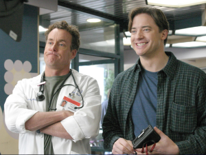
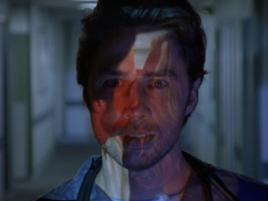
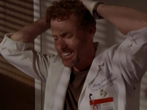
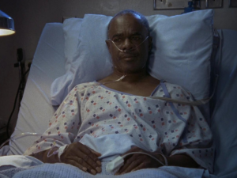

Бэн Салливан приезжает на день рождения сына Кокса, но выясняется, что он совсем не следил за своей болезнью.
ДжейДи переживает из-за того, что Кокс не пригласил его на день рождения сына.
Терк и Карла спорят насчет родинки над губой Терка.

Джей Ди проводит свой последний день в больнице Святого Сердца и надеется узнать «настоящее» имя Уборщика и настоящие чувства доктора Кокса к нему. Терк беспокоится о том, как попрощаться с Джей Ди должным образом.

Джей Ди и доктор Кокс сталкиваются с Джилл Трейси в супермаркете во время обеда. Джилл умирает, и Джей Ди чувствует себя плохо из-за того, что он не помог человеку, который явно нуждался в помощи. Доктор Кокс приглашает Джей Ди на обед и утешает его. Органы Джилл передаются трем пациентам, перенесшим трансплантацию, но что-то идет не так.

Джей Ди и Терк отказались от традиции утешать умирающего пациента. Джей Ди рассказывает Дениз о ее манерах у постели больного. Связь Джордан и доктора Мэддокс.